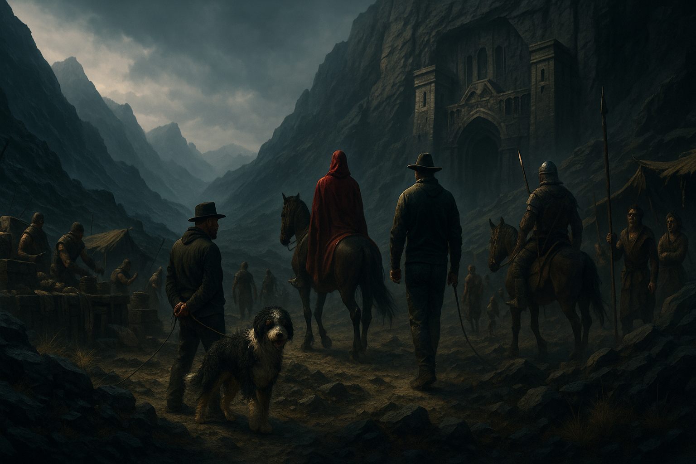

Chapter 17 — To the Caller

They bound me tighter, ropes biting deep, and dragged me from the camp before dawn. The red-cloaked representative rode ahead, escorts close behind. The bandit leader handed me over without ceremony. Payment must have changed hands—I didn't see it, but I felt it in the way the camp watched me go. Relief in some faces. Resentment in others.
But before the sun rose high enough to burn through the mist, Tov found me alone for a moment, guards drinking water by a stream. He pressed something into my palm—a carved token, small and heavy, with a symbol I didn't recognize burned into its wood.
"If you survive long enough to matter," he said quietly, "I'll find you. The world is small to those who know the roads."
He didn't wait for a response. He just stepped back, raised his hands to show he was going peaceful, and let the guards recapture me. But his eyes held something then that I hadn't seen before. Not fear. Purpose.
Merlin came too, rope looped to a saddle, stumbling at my side. He was physically recovered now—his legs obeyed, his breath came steady, his eyes alert. But something still slept inside him, dormant. When a guard drifted too near he let out a rumble low in his chest, steady and dangerous. The men gave him distance, muttering, eyes flicking away whenever his gaze met theirs. They were right to fear him. They just didn't understand what they were afraid of.
We marched for hours through thinning forest, the land rising into ridges of black stone. At last we came to a structure carved into the cliff itself. Vast arches cut from living rock, doorways tall as towers, smoke curling from vents. The air hummed faintly, as if the place itself breathed.
Inside, the Caller waited.
He was not grand—plain robe of ash-grey, hands bare, head shaved—but power hung on him like heat before a storm. His eyes caught me and weighed me like coin on a scale.
The representative bowed low. "The Warden of Systems, my lord. As promised."
I froze. The title hit me like a punch. The Warden of Systems. The words from that circle of fire, from the summoning that had broken my mind and spat me into this world. The Caller knew. He had always known.
The Caller's gaze sharpened. His mouth curled. "The Warden of Systems. So soon. I thought I would scour half the land to find you. Yet here you are, delivered like a gift."
Merlin growled, chest flickering with pale light. The glow built, stronger this time than in the camp, his frame swelling, spectral mist curling at his paws. He stepped between me and the Caller, jaws bared. This was mortal danger. This was the thing his strange power recognized and answered to.
"Interesting," the Caller murmured. "Not a wolf. Not a beast I know. But bound to you, and that makes it useful. As are you."
He raised one hand. A word snapped the air like a whip—not a scream, just a sharp command, but something absolute in it.
Merlin yelped, light cut off in an instant. He collapsed, twitching, chest heaving in shallow gasps. The power inside him, whatever it was, choked into silence.
Something in me broke. Not rage alone, not fear alone. Love. The protective instinct I'd felt in the tunnels but magnified, absolute. I watched Merlin dying and something deeper than survival, deeper than sanity, woke in my bones.
My vision blurred, then cleared into something else. The world bent. Threads of light and shadow ran through the floor, walls, ceiling, binding everything into a hidden geometry. A lattice humming with power, and at its center stood the Caller. The pattern was like reading a room, but the room was made of stone and light, and I could see where the strength gathered, where the leverage points were, what held the structure standing.
I pulled.
Stone buckled upward, a wall tearing from the floor. Torches spat smoke, shadows lengthened. The ropes on my wrists unraveled, knots coming apart like rotten twine. The Caller's escorts staggered, shouting, but I wasn't interested in them.
The Caller's eyes widened—and then he smiled. "Yes. Good. Very good. The Sight awakens."
But I wasn't staying to perform for him.
I hauled Merlin across my shoulders, his body heavy and limp, and forced my legs to move. The threads guided me, glowing paths through the stone. I collapsed arches, split walls, sealed corridors behind us. Each pull was instinct, frantic, the Sight guiding me where to press, where the structure would crack. It worked. The fortress was letting me run because the Caller wanted me to run, wanted to see what I would do, but I didn't care about his amusement. Merlin's weight was all that mattered. Merlin's breath, still shallow against my neck. Merlin alive.
The Caller's laughter followed, echoing down the tunnels. "Run, Warden! Run far! The world itself will bring you back to me."
We burst into the outer halls, into cold air stinking of smoke. I stumbled down a side passage, Merlin's weight dragging me sideways, heart pounding with terror and fury. The Sight burned bright, showing me the paths, the ways out, the geometry of escape.
Then, all at once, it flickered—and vanished. The glowing lattice was gone. The threads snapped back into the hidden places they'd come from. The world was just stone again, dull and heavy.
I stopped, gasping. The power was gone. I was blind again, ordinary, rope-burned, staggering under the weight of my dog.
Merlin twitched against me, still breathing, still alive. His chest rose in shallow gasps, but they came. That was enough.
We pressed on into the night, away from the Caller, away from the fortress, into the wild unknown.